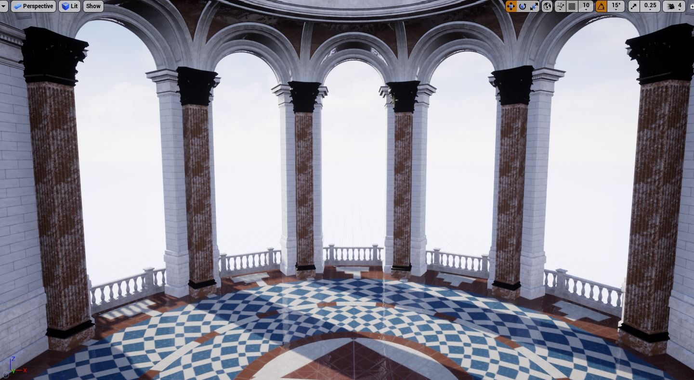
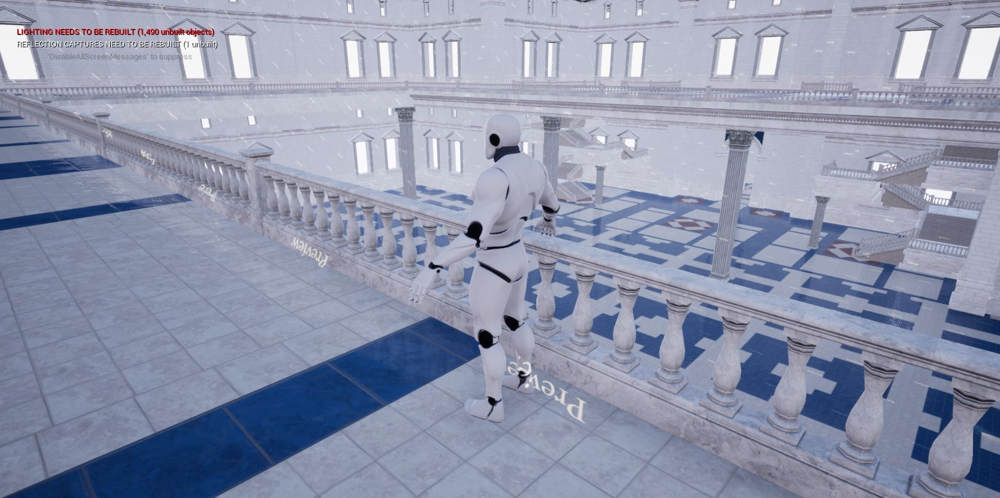
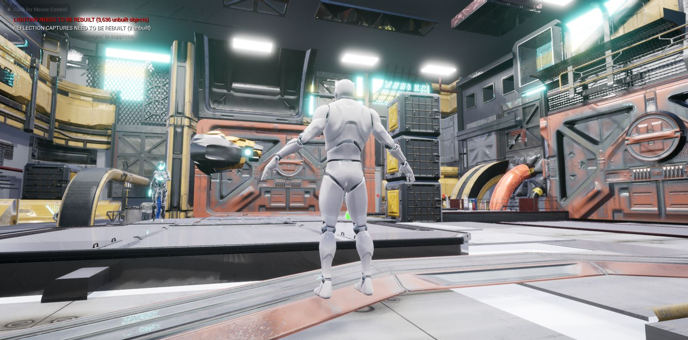
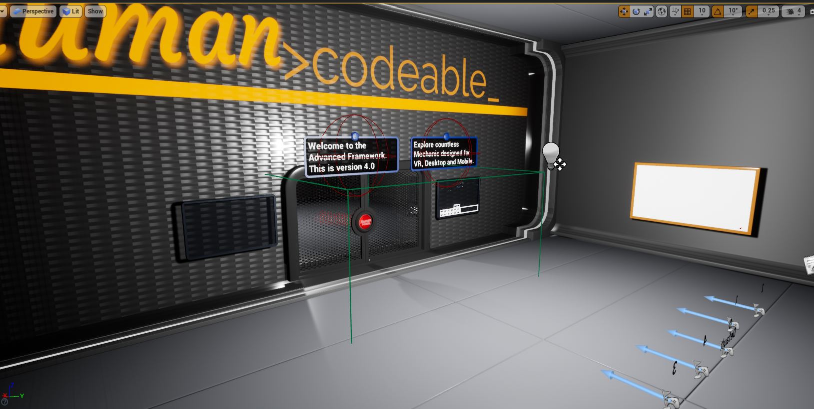
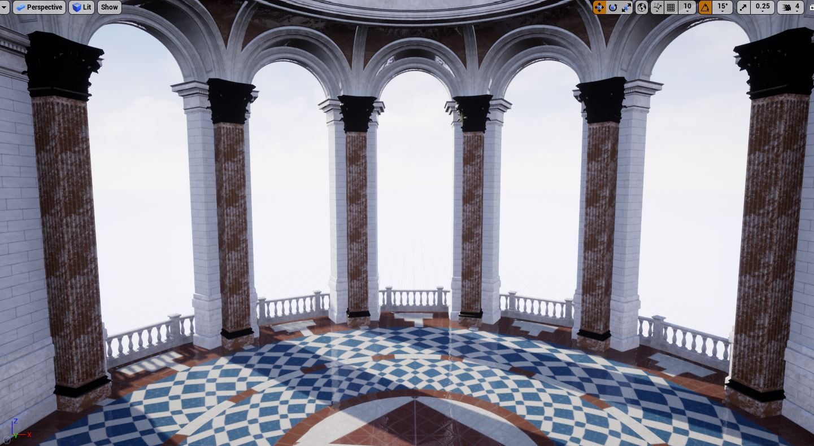
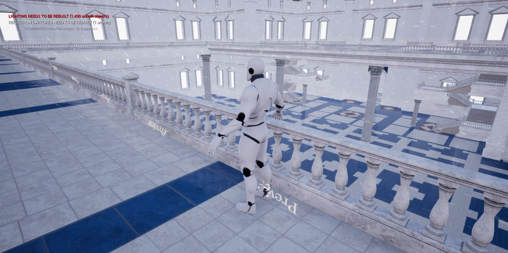
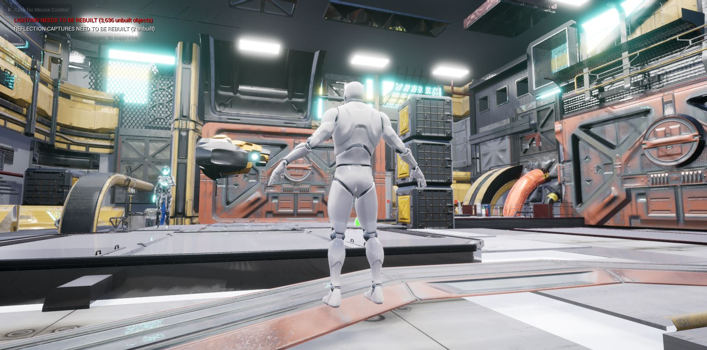
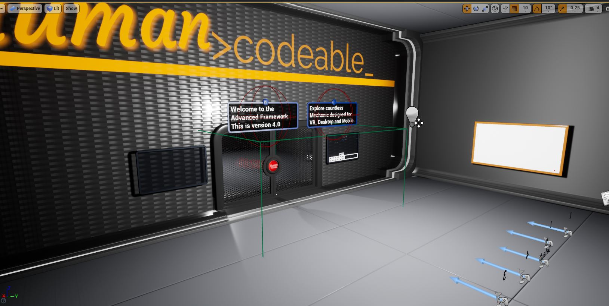
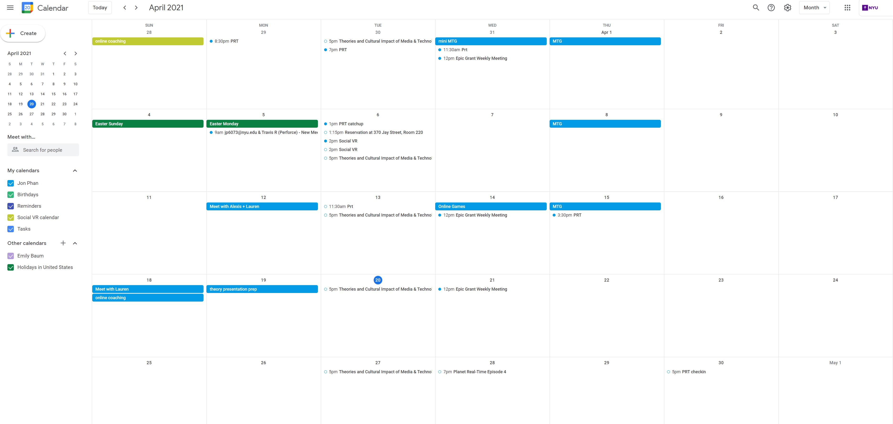

Week 10/11 Setting up Level, Level Streaming & VR
 








Social Calendar
 I haven't had much time to socialize normally but I did put in an hour and a half on Tues and Wed to just take a break and play some cards and a game with my one friend. Most of my digital socializing recently has been meetings and project work. I have been trying to keep up with messages with my team to make sure they don't get stuck too much. I found that putting together little videos of myself doing stuff in UE4 has been the easiest way to show people how to do things rather than trying to setup meetings or type things up. I do things like show how to navigate the material editor, make doors open, migrating stuff to different levels, how to setup perforce and more. https://drive.google.com/file/d/1FyqUghQTcqmsXK7Z6PyAaiC5E9_qiriu/view?usp=sharing level streamer demo https://drive.google.com/file/d/1iDZrGuruFusAu3-UFc53Cc-n6qV9sRbd/view?usp=sharing perforce tutorial https://drive.google.com/file/d/12q0rhKh4wnElZ4gupKRgPnArKME9UJrW/view migrating levels https://drive.google.com/file/d/12d9gidCXvfXF9eXbKtmuvdvOh5xa7Wir/view setting up doors https://drive.google.com/file/d/1CGp9AKzDILURsdOf7Yh7-bOqc3jDxBr2/view using material instanceshome
while (!deck.isInOrder()) {
print 'Iteration ' + i;
deck.shuffle();
i++;
}
print 'It took ' + i + ' iterations to sort the deck.';